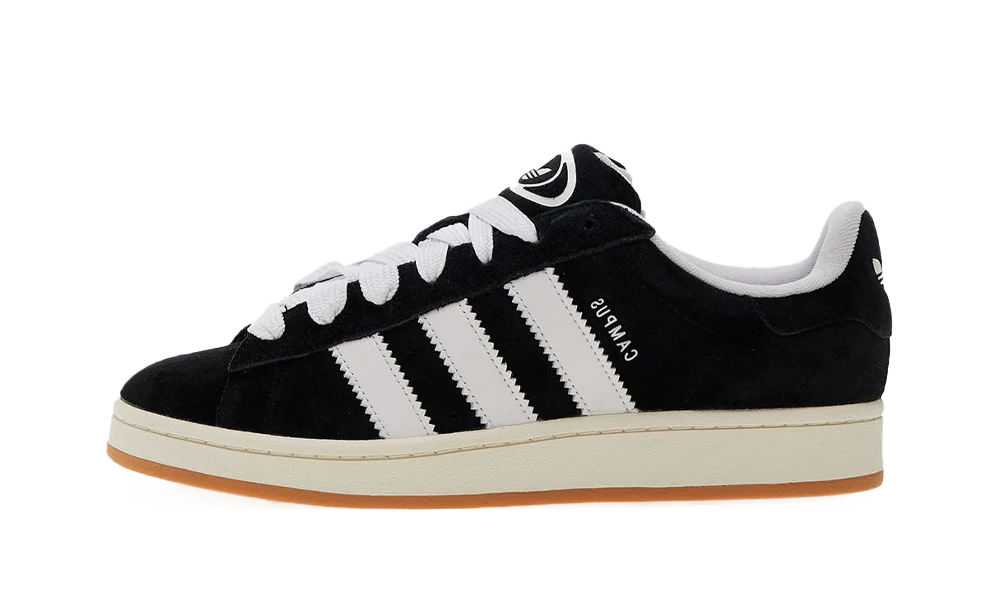
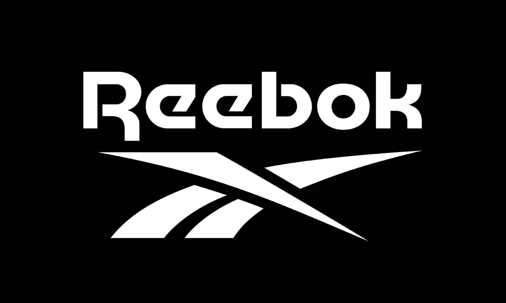

Az Adidas ismertsége Németországban 99%-os. A Splendid Research GmbH Németország területén 1014 részvevővel végzett online felmérése 2017-ben azt az eredményt hozta ki, hogy sportfelszerelések közül 36,5%-uk viseli legszívesebben az Adidas termékeit, második helyen a Nike állt 24,5%-kal. Az Adidas márkajelzései közül a kezdetektől fogva a három párhuzamos sáv a legismertebb: „Három vertikális, párhuzamosan futó azonos szélességű csík, melyeket a sport- és szabadidőruházatok oldalára visznek fel és melyek az öltözet alapszínével kontrasztban lévő színűek” teszik ki ezt a megjelenést.
1971 óta a három leveles logó (Trefoil/Dreiblatt) is a márkajelzéshez tartozik, mely a három kontinentális lemezt összekötő olimpiai szellemiséget hivatott szimbolizálni. 1990 óta a három sávnak egy újabb elrendezése is hivatalos logója lett az Adidasnak, ebben a megdöntött, különböző hosszúságú fekete sávok egy háromszöget, egy stilizált hegyet képeznek. Ezt a logót a „Performance” részleg részére alkották meg. Az „Equipment” hozzáadásával 1991-ben egy új almárka jött belőle létre. 2002-ben egy újabb logót kreáltak a „Style” részleg számára, melyben a három (balról jobbra szűkülő) sáv a földgolyót jelképező sötét gömbön húzódik keresztül. A (2023-as állás szerinti) utolsó logó 2006-ban jött ki. Ebben a három, azonos szélességű sáv vízszintesen húzódik, tőle jobbra pedig az „adidas” felirat szerepel.
A Salomon eladásának tervezésével egyidőben állt össze az Adidas a Reebokkal azzal a céllal, hogy közelebb kerüljön a piacvezető Nike-hez. 2006 január 31-én köttetett meg az üzlet a Reebok International Ltd. megvásárlásáról. A Reebok részvényesei részvényenként 59 amerikai dollárt kaptak készpénzben. A tranzakció értéke 3,1 milliárd euróra rúgott. Herbert Hainer maradt az új Adidas Csoport vezérigazgatója, míg Paul Fireman visszalépett a Reebok International Ltd. vezérigazgatói posztjától és Hainer tanácsadója lett. A Reebokkal együtt érkezett a Greg Norman Collection golfmárka (ezt az Adidas még 2006 októberében eladta a MacGregor Golf Company-nak), a jégkorong- és görkorcsolyagyártó CCM Hockey és az utcai cipőket előállító Rockport a csoportba, mely utóbbit a Reebok még 1986-ban szerzett meg. Az Adidas 2015-ben adta el a Rockportot a bostoni Berkshire Partners társtulajdonosi társaságnak és a New Balance-nak. A CCM Hockey-t 2017-ben a kanadai Birch Hill Equity Partners társulajdonos társaságnak adták el.
Az Adidas eddig a Reebokkal ellentétben nem tett szert nagyobb piaci részesedésre a sportcipők eladása terén az Egyesült Államokban. Európában a felállás fordított volt, mivel itt a Reebok részesedése volt jóval gyengébb. A fúzióval az Adidas piaci részesedését akarta növelni és a 2005-ben 11,6 milliárd euró forgalmat bonyolító Nike-vel szemben igyekezett pozícióit megerősíteni.
Herbert Hainer egy a Süddeutsche Zeitung lapnak adott interjújában ismerte el az év decemberében, hogy a Reebok esetében szanálásról van szó. A Reebok forgalma 2007 első három negyedévében folyamatosan csökkent. 2021. augusztus 12-én adták hírül, hogy a Reebokot eladni tervezik az Authentic Brands Groupnak 2,1 milliárd euróért. Az ügyletet 2022. február 28-án zárták le.
| Típus: | Részvénytársaság |
| Alapítva: | 1949 augusztus 18. |
| Névadó: | Adolf Dassler |
| Alapító: | Adolf Dassler |
| Székhely: | Herzogenaurach, Németország |
| Vezetők: | Adolf Dassler (alapító),Herbert Hainer,Erich Stamminger,Hans Friderichs stb... |
| Termékek: | Sportszergyártás (cipő,ruházat,parfümök..) |
| Legnagyobb árbevétel (év): | 22,5 milliárd euró (2022) |